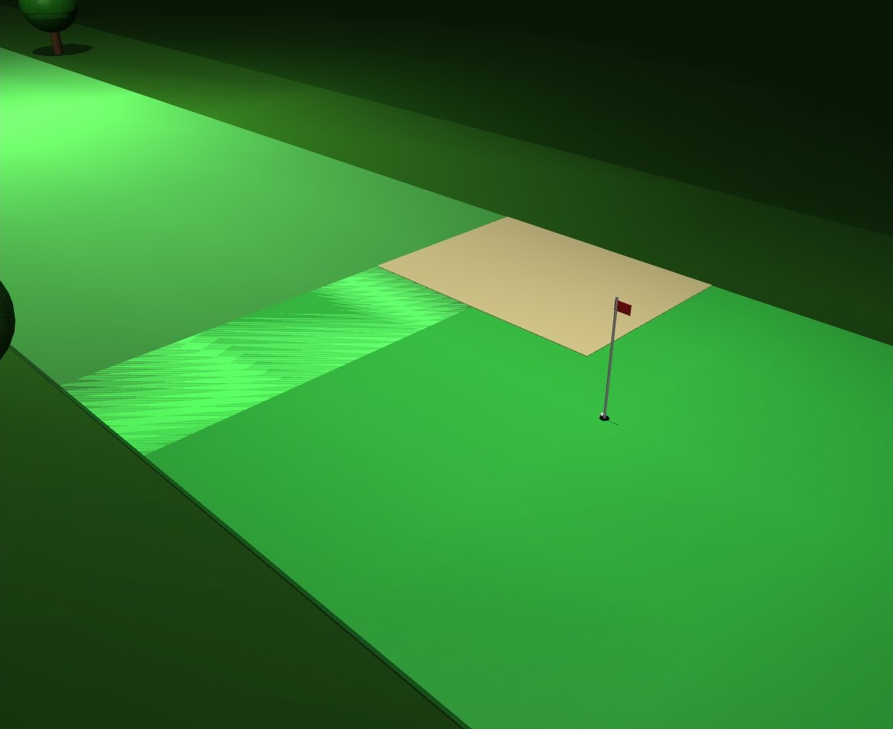
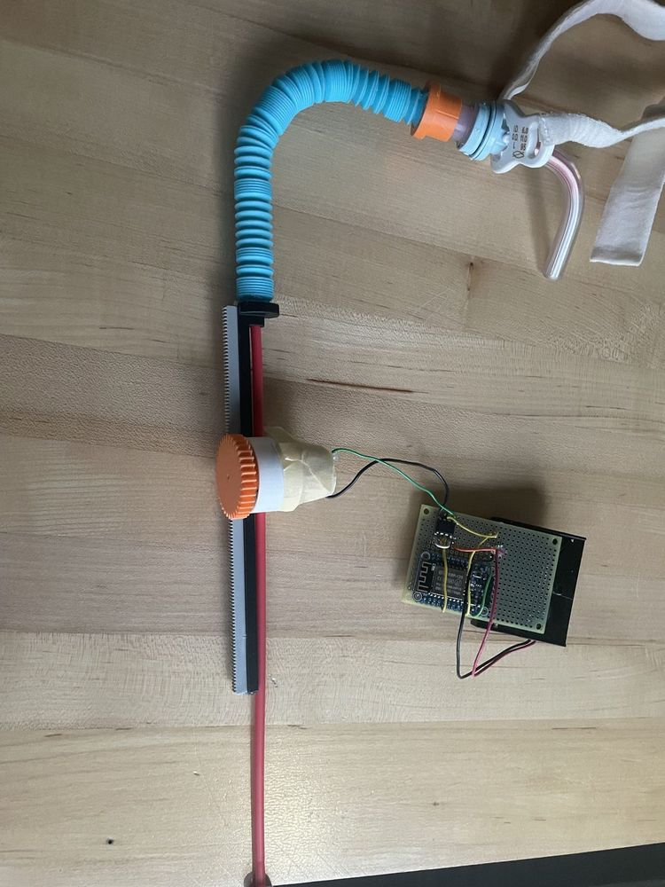
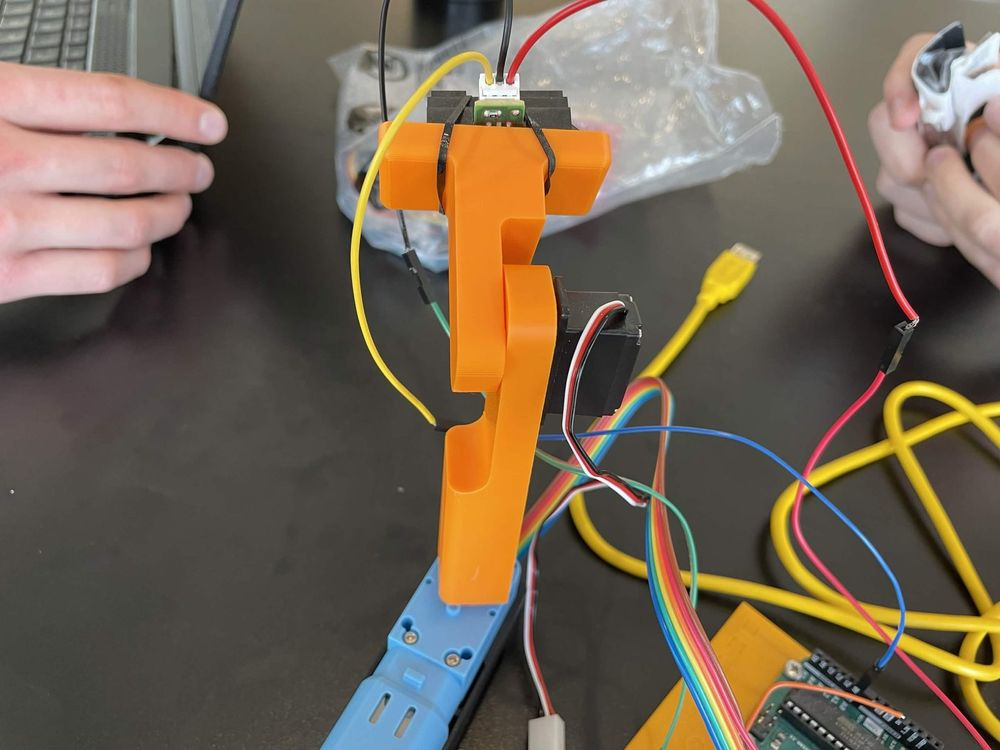

Golf Shot Optimization
A MuJoCo golf simulation with a CMA-ES optimizer that holed shots on two courses within 144 rollouts and cut a hazard course from 3 strokes to 2 with full-horizon sequence planning.
Read morePortfolio
Work spanning reinforcement learning, optimization, controls, planning, deep learning, and embedded hardware. Read more to see the problem, my approach, and the results.

A MuJoCo golf simulation with a CMA-ES optimizer that holed shots on two courses within 144 rollouts and cut a hazard course from 3 strokes to 2 with full-horizon sequence planning.
Read more
PointNet and DGCNN trained and compared for part segmentation on ShapeNet across 16 object categories, with DGCNN reaching 83.6% mIoU versus 82.9% for PointNet.
Read more
A model reference adaptive controller (MRAC) that kept a simulated quadrotor tracking altitude commands through a 67.2% motor thrust loss that crashed the LQR baseline.
Read more
An integral-augmented LQR steering controller with PID speed control and A* planning that completed a full track loop at 0.50 m mean cross-track error and overtook a slower vehicle.
Read moreA PID-controlled, IR-sensed maglev rig for interactive controls demonstrations, with gains selected from a nonlinear Simulink model and a 3D-printed SolidWorks housing.
Read more
A senior capstone medical device: I led a six-person team and owned the hardware, electronics, and ESP-12S firmware for an automated tracheostomy suctioning system.
Read more
A prebuilt mobile robot programmed over SSH to drive a preset road course from its onboard RGB camera, following the lane line while detecting stop signs, speed-limit signs, turns, and intersections.
Read more
A 2-DoF servo arm with a 3D-printed body and an IR sensor for eyes, programmed with distance-triggered behaviors: scanning continuously, then recoiling from objects that came suddenly close.
Read more
Embedded C++ flight software on a Teensy 4.1 for real-time sensing and onboard logging, with the avionics schematic captured in KiCad, brought up on breadboard, and hand-wired on perfboard for flight.
Read moreReproducing the FlashSAC soft actor-critic algorithm on quadruped locomotion in Isaac Lab, and extending it with prioritized replay sampling and an actor-update delay that adapts to critic reliability. In progress.
Read moreBeyond the Projects
Leadership, service, and coursework.
Led the six-person senior capstone team at Penn State, running meetings, the project schedule, and patent and prior-device research.
See the capstoneChild Life Foundation · Pittsburgh, PA · 2018 – Present
Support annual fundraisers through reception, event setup, and on-site technical support.
Carnegie Mellon: Robot Learning · Optimal Control & Reinforcement Learning · Modern Control Theory · Introduction to Deep Learning · ML and AI for Engineers · Mechatronics Applications in Mechanical Engineering
Penn State: Introduction to Robotics · Automated Control Systems · Embodied Intelligence and Bioinspired Robotics